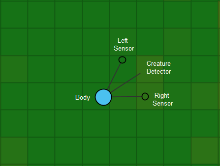
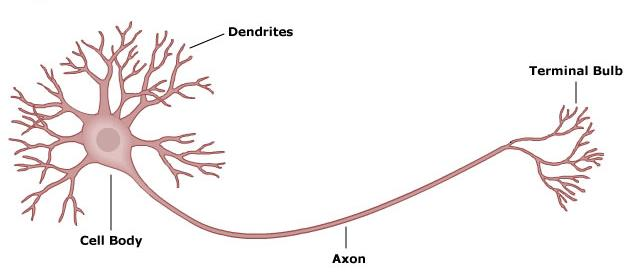

Evolutionary Neural Network
As an ongoing independent project from late high school, I decided to program an
artificially-evolving neural network simulator using basic creatures in a predefined environment.
I took inspiration from several other community programmers who made similar programs. This was my first
attempt at using a neural network to facilitate fitness-based evolution.
The Environment
The environment of the simulation is a 100 by 100 grid of tiles, generated by a user-created .png image of
the desired layout. The program reads the pixels' colors and decides if it is a water or land tile.
The example shown here is a map that is mostly covered with land, with some
minor water bodies providing boundaries and obstacles. Each tile contains a certain amount of food, a regeneration
rate, and a cooldown timer for restarting the food regeneration process after it is completely depleted to
discourage stagnant creatures.
Each tile can either be land or water. Water tiles have no food and no regeneration, so it is extremely
disadvantageous for a creature to remain in the water for a long period of time. The goal of this is
to encourage the evolution of water-avoidant traits.

Meet The Creatures!
Shown here is an example of a creature in the simulator. Each creature has several sensors, which help it
identify certain aspects of the environment, like the amount of food around it or if there is another
creature nearby. These sensors are the source of input to the creature's neural network and help determine
what actions the creature will take.
Creatures that are successful at staying alive and feeding can produce offspring with slightly mutated genes,
which imitates random genetic variation in humans.
Neural Network Design
Each creature’s intelligence is determined by its internal neural network system. The values of the inputs and
hidden layers represent the neurons, while the connections between them represent the axons of the network.
A network of n countable neuron layers must have n - 1 axon layers. This closely resembles neural interaction
in the human nervous system.
My simulation uses a feedforward neural nework design. In a feedforward design, input values are multiplied,
summed, and run through a sigmoid function into hidden layers of values, which are then multiplied, summed,
and run through sigmoid functions between each other as needed and finally into an output layer of values.
To the right is a visualization of my network design for these creatures. The neuron values are shown as
numbers, with axon lines ranging from black (negative axon) to white (positive axon). Empty values are spaces
left for future additions.

Feedback System
In order for actual evolution in behavior to occur, some form of feedback from the environment is required.
In this model, environmental fitness is the source of feedback. Creatures with a greater suitability to survive
(fitness) are more likely to reproduce, passing on their network qualities. Over time, the networks of
more-suitable creatures will dominate the landscape, and newly-developed traits among those suitable creatures
will cause disruptions in any equilibrium that is established, leading to further refinement of the network pool
as competition for resources drives evolution.
Observed Traits
One of the most prevalent traits that can be seen in the simulator is the avoidance of disadvantageous
tiles. Many creatures, in a map that includes bodies of water, will adapt to avoid water and tiles with
little food. Being in these areas is disadvantageous because, while the creatures constantly decay,
they will have no source of food.
Here is an example of a creature with a neural network that learned to change direction or avoid water
or foodless tiles completely when it encountered them. Some creatures tend to back away, some choose to
speed up to get through, and some exhibit a combination of the two.
Creature Count and Gene Evolution
As the simulation runs, it keeps track of how many creatures were alive and their genes through time. Creatures
will similar neural networks will have similar colors for easy visual identification. Once certain
suitable creatures grow in population to dominate the environment, resources become scarce and the population
decreases, giving rise to new, more suitable populations.
In this example, dark green and dark pink/purple creatures dominated for a period of time. Once resources ran out,
a period of turbulence followed as other more-suitable populations grew out of the scarcity, leading to descendants of the
pink/purple populations to grow. Once those descendants grew to capacity and used up the newly available resources,
more turbulence ensued which gave rise to yet another more-suitable descendant population of the purple neural
network traits. This process repeats over and over again and is the driving force behind the neural network evolution.
Watching the graphs reflecting this phenomenon in real time is truly fascinating, and I am very proud of these results!
Limitations
Although this program has successfully achieved basic creature instincts, this network design has some important limitations.
This is evolution with fixed topologies. In other words, since every creature has the same neural network
structure, significant innovation is extremely difficult and time consuming. Stay tuned, as I am currently working on a
project with neural networks that don't only evolve through numerical values, but in their very structure as well!
Try it Yourself!
If you are interested, feel free to download and run this simulation for yourself. You can find it on my GitHub page,
which is linked in the menu. Run the "NeuralNetLatest.jar" file. I'm sure you will enjoy watching and
interacting with the creatures of the simulation!